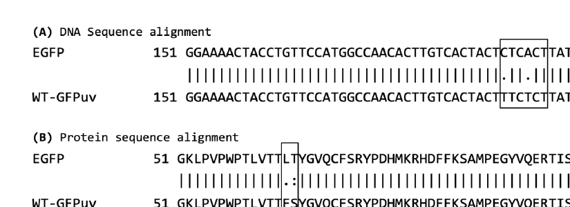
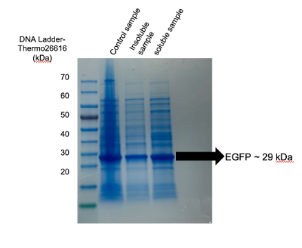
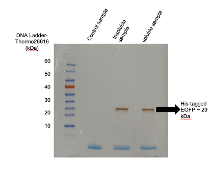
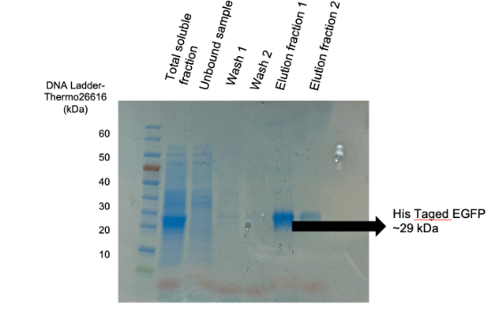
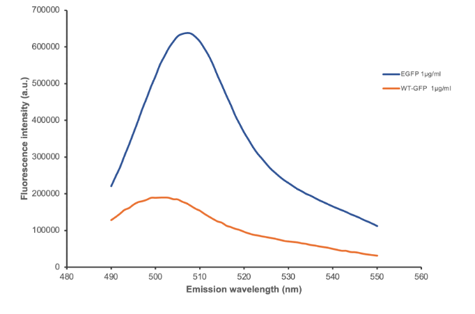

Protein engineering · flagship wet-lab project
Engineering and characterising a brighter green fluorescent protein
Investigated whether F64L and S65T substitutions could improve GFP folding and fluorescence. The work connected DNA manipulation, recombinant expression, protein purification, orthogonal identity confirmation and functional measurement.



DNA engineering
Plasmid extraction, restriction digestion, gel purification, ligation, transformation, colony PCR, site-directed mutagenesis and sequence alignment.
Protein production
Auto-induction in E. coli BL21(DE3), cell lysis, soluble/insoluble fractionation and Ni-NTA affinity purification.
Characterisation
SDS-PAGE, Western blot, NanoDrop quantification, LC-ESI-MS and matched-concentration fluorimetry.


The mutation strategy produced a functionally improved recombinant protein supported by sequence, gel-based, immunochemical, mass and fluorescence evidence.